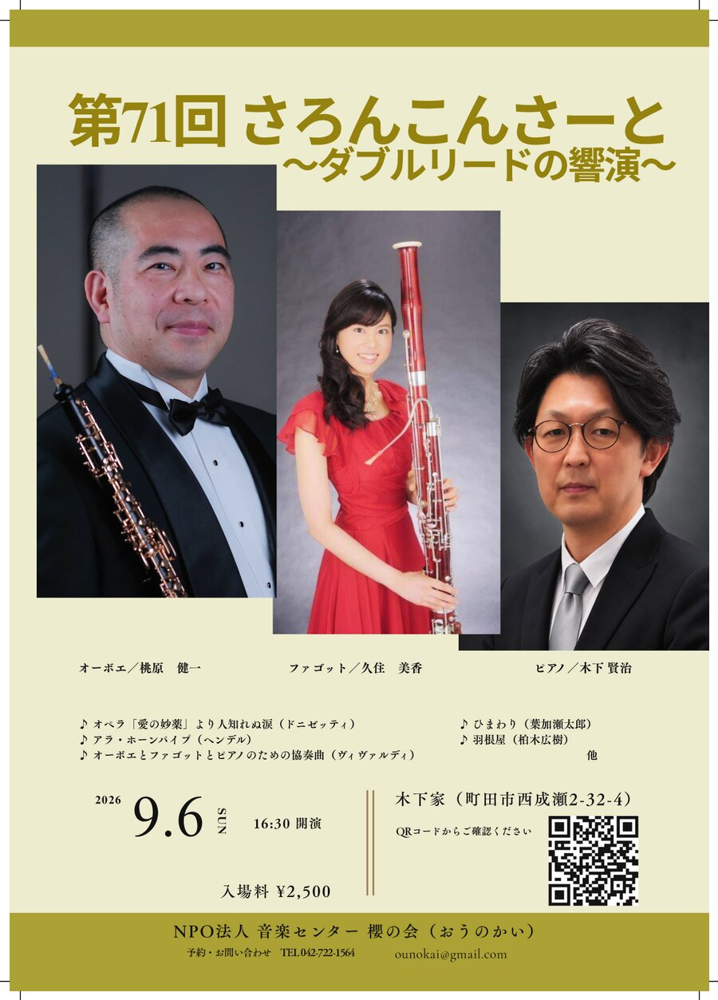
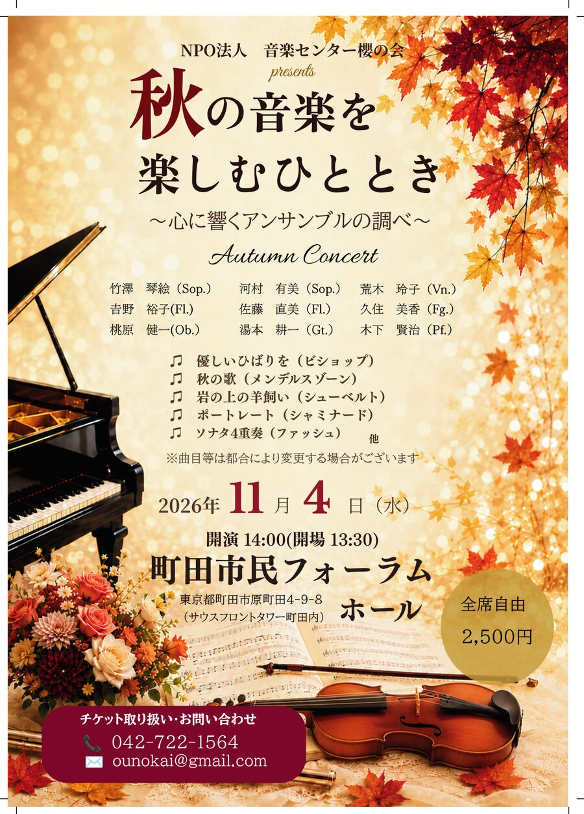
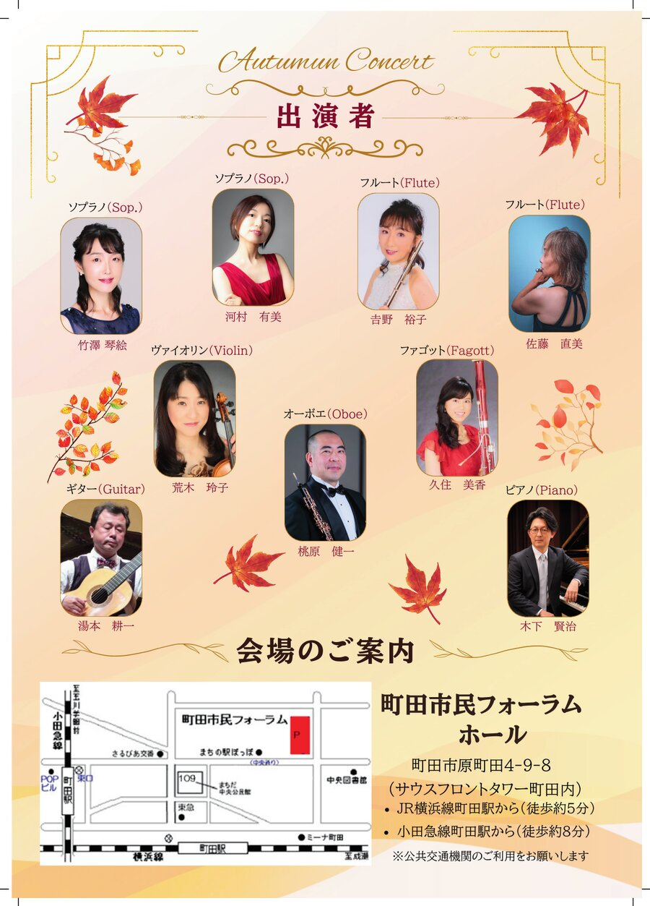

特定非営利活動法人 音楽センター櫻の会
← トップページに戻る
Upcoming Concerts
コンサート情報
2026.9.6 (日) 16:30開演
第71回 さろんこんさーと

〜ダブルリードの響演〜
会場
木下家（東京都町田市西成瀬2-32-4）サロンコンサート
料金
2,500円
予約
TEL 042-722-1564
／
ounokai@gmail.com
オーボエ
桃原健一
ファゴット
久住美香
ピアノ
木下賢治
オペラ「愛の妙薬」より人知れぬ涙（ドニゼッティ）、アラ・ホーンパイプ（ヘンデル）、オーボエとファゴットとピアノのための協奏曲（ヴィヴァルディ）、ひまわり（葉加瀬太郎）、羽根屋（柏木広樹）ほか
2026.11.4 (水) 14:00開演
開場13:30


秋の音楽を楽しむひととき 〜心に響くアンサンブルの調べ〜
会場
町田市民フォーラム ホール（町田市原町田4-9-8）
料金
全席自由 2,500円
予約
TEL 042-722-1564
／
ounokai@gmail.com
ソプラノ
竹澤琴絵・河村有美
フルート
吉野裕子・佐藤直美
ヴァイオリン
荒木玲子
オーボエ
桃原健一
ファゴット
久住美香
ギター
湯本耕一
ピアノ
木下賢治